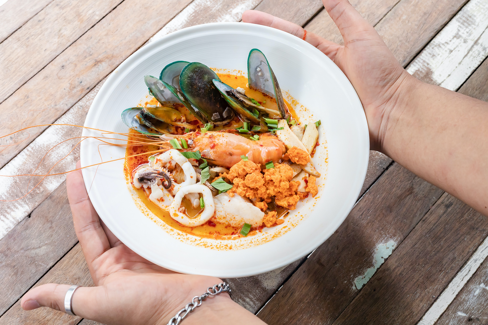

Double Chocolate Cookies!
Origin: Thailand Source: Traditional Food Category: Entree
"This Tom Yum Soup with Shrimp, or tom yum goong, is surprisingly easy to make, as long as you can find a few key ingredients, like Thai chilies, lemongrass, lime leaves, and fish sauce. " (Sarah from https://thewoksoflife.com/tom-yum-soup/)
Recipe Ingredients
- "Lemongrass"
- "Thai Bird’s Eye Chilies"
- "Makrut lime leaves (also known as kaffir lime leaves)"
- "Galangal"
- "Thai Chili Paste (Nam Prik Pao)"
- "Fish Sauce"
- "Whole Shrimp"
Reference: -, Sarah, “Tom Yum Soup Recipe (Tom Yum Goong).” The Woks of Life, 21 October 2021, URL: https://thewoksoflife.com/tom-yum-soup/. Accessed 18 September 2023.
Recipe Steps
- "Peel the shrimp and remove the heads. Reserve the meat and the shells separately" (Sarah from https://thewoksoflife.com/tom-yum-soup/)
- "Heat 1 tablespoon of oil in your wok over medium high heat, and add the shrimp shells and heads." (Sarah from https://thewoksoflife.com/tom-yum-soup/)
- "Stir-fry for 1-2 minutes, until they turn a bright and deep orange." (Sarah from https://thewoksoflife.com/tom-yum-soup/)
- "Add 3 cups of water, and bring to a simmer." (Sarah from https://thewoksoflife.com/tom-yum-soup/)
- "Cover, and simmer for 10 minutes. Remove the shells from the stock using a strainer." (Sarah from https://thewoksoflife.com/tom-yum-soup/)
- "Take the lemongrass, and trim away the dry reedy bit about halfway up the stalk, and then trim the base. Peel the tough outer layers away to reveal the more tender center. Smash the lemon grass using a mallet or heavy rolling pin (one without handles). " (Sarah from https://thewoksoflife.com/tom-yum-soup/)
- "Stir in the sugar, Thai chili paste and fish sauce. Stir until the chili paste has fully dissolved in the soup. " (Sarah from https://thewoksoflife.com/tom-yum-soup/)
- "Finally, add the shrimp. Simmer for 30 seconds to 1 minute, depending on their size, until they’re just cooked through. " (Sarah from https://thewoksoflife.com/tom-yum-soup/)
Reference: -, Sarah, “Tom Yum Soup Recipe (Tom Yum Goong).” The Woks of Life, 21 October 2021, https://thewoksoflife.com/tom-yum-soup/. Accessed 18 September 2023.
Recipe Images


Credit for 1st to the left: Laura Mitulla, “Lemongrass.” Unsplash.com, June 6, 2019, URL: https://unsplash.com/photos/CQOm4U4E71M, Accessed 18 September 2023.
Credit for 2nd to the left: Consious Design, galangal unsplash.com, January 19, 2021, URL: https://unsplash.com/photos/iSGbjKZ9erg, Accessed 18 September 2023.
Credit for 3rd to the left: AM FL, “cockatoo” unsplash.com, January 27, 2019, URL: https://unsplash.com/photos/3cjbDO3QJJo, Accessed 18 September 2023.